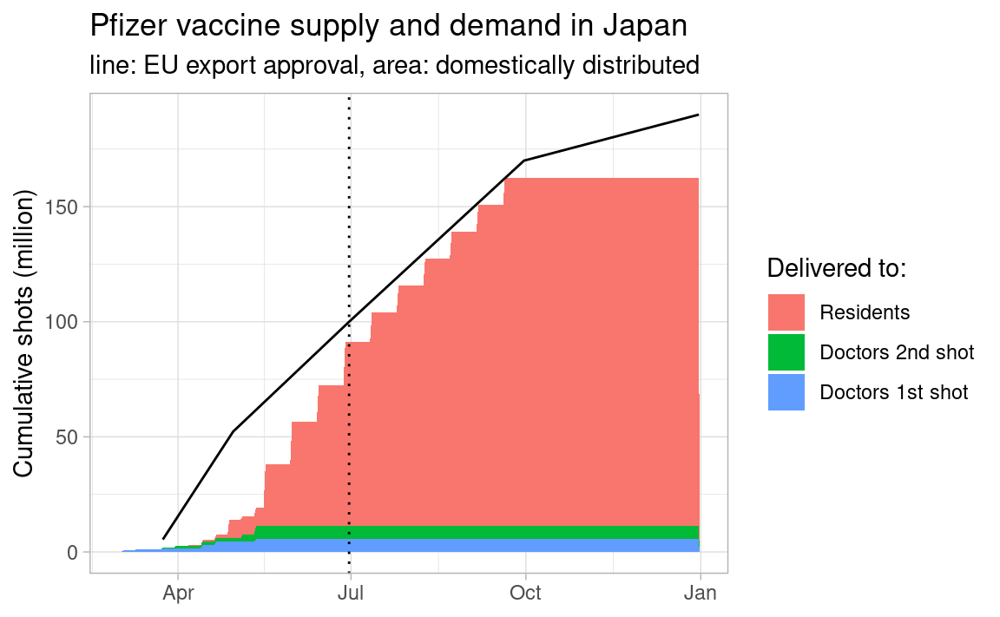

Code
library(tidyverse)
library(lubridate)
theme_set(theme_light())Mitsuo Shiota
August 1, 2021
My previous post was about the vaccine stock mystery. Central government says there must be 40M shots stocks, and FNN reports 40M shots stocks are 25M reserved for the second boost shots, 5M not-yet-reported shots, and 10M missing for unknown reasons. At that time, I thought at least 8M shots were not delivered to municipalities, if “Prospects for Pfizer vaccine supplies” by MHLW (Ministry of Health, Labour and Welfare) (japanese) is correct.
And Nikkei reports Minister Kono says municipalities have 25M shots of vaccine stocks, which are equivalent to one week shots (Japanese) today (August 1, 2021). This is strange. One week shots are 1.2M per day times 7 days = 8.4M, far smaller than 25M.
I checked shot loss from the last diluted vial in my previous post, and found the loss would be less than 1M shots per month. This alone can’t explain the mystery.
In this post, I check EU export approvals based on EU transparency and authorisation mechanism and “Prospects for Pfizer vaccine supplies” by MHLW (japanese), and would like to claim the missing vaccine stocks are exported from EU but not yet delivered to municipalities, thus are in the hands of the central government.
Shots are in millions. EU approved 100M shots by “2021-06-30”. An officer of the Cabinet Office assumes 12M among 100M shots are distributed to doctors, and the rest 88M are distributed to residents in CNET Japan: Gov’t provides an IT system to support 1.2M shots per day. He also expects additional approvals by “2021-09-30” and “2021-12-31”.
Data are from “Prospects for Pfizer vaccine supplies” by MHLW (japanese), which specifies delivery date as a week that starts on “date”. So all dates are Monday.
for_doctors_1 <- tribble(
~date, ~box,
"2021-03-01", 500,
"2021-03-08", 500,
"2021-03-22", 200,
"2021-03-29", 200,
"2021-04-12", 1200,
"2021-04-19", 1200,
"2021-05-10", 1000
) %>%
mutate(
date = as.Date(date)
)
for_doctors_2 <- tribble(
~date, ~box,
"2021-03-22", 500,
"2021-03-29", 500,
"2021-04-12", 200,
"2021-04-19", 200,
"2021-05-03", 1200,
"2021-05-10", 2200
) %>%
mutate(
date = as.Date(date)
)
wday(for_doctors_1$date, label = TRUE)[1] Mon Mon Mon Mon Mon Mon Mon
Levels: Sun < Mon < Tue < Wed < Thu < Fri < Sat[1] Mon Mon Mon Mon Mon Mon
Levels: Sun < Mon < Tue < Wed < Thu < Fri < SatAs the actual delivery date are not on Monday, I move them to Wednesday to reflect the average delivery date.
All dates are Monday as well in “for_residents”.
for_residents <- tribble(
~date, ~box,
"2021-04-05", 100,
"2021-04-12", 500,
"2021-04-19", 500,
"2021-04-26", 5741,
"2021-05-10", 16000,
"2021-05-24", 16000,
"2021-06-07", 13500,
"2021-06-21", 16000,
"2021-07-05", 11000,
"2021-07-19", 10000,
"2021-08-02", 10000,
"2021-08-16", 10000,
"2021-08-30", 10000,
"2021-09-13", 10000
) %>%
mutate(
date = as.Date(date)
)
wday(for_residents$date, label = TRUE) [1] Mon Mon Mon Mon Mon Mon Mon Mon Mon Mon Mon Mon Mon Mon
Levels: Sun < Mon < Tue < Wed < Thu < Fri < SatDelivery is weekly up to “2021-04-26”, and bi-weekly from “2021-05-10”. So I move weekly delivery date to Wednesday, and bi-weekly delivery date to the second week Monday.
Then I combine “for_doctors_1”, “for_doctors_2” and “for_residents”, and calculate cumulative delivered boxes.
date_frame <- tibble(
date = seq(as.Date("2021-03-01"), as.Date("2021-12-31"), 1)
)
deli_for_doctors_1 <- date_frame %>%
left_join(for_doctors_1, by = "date") %>%
replace_na(list(box = 0)) %>%
mutate(cum_box = cumsum(box))
deli_for_doctors_2 <- date_frame %>%
left_join(for_doctors_2, by = "date") %>%
replace_na(list(box = 0)) %>%
mutate(cum_box = cumsum(box))
deli_for_residents <- date_frame %>%
left_join(for_residents, by = "date") %>%
replace_na(list(box = 0)) %>%
mutate(cum_box = cumsum(box))
delivered <- bind_rows(
deli_for_doctors_1 %>% mutate(id = "Doctors 1st shot"),
deli_for_doctors_2 %>% mutate(id = "Doctors 2nd shot"),
deli_for_residents %>% mutate(id = "Residents")
)I assume straight line between EU approvals. I also assume 195 vials per box and 6 shots per vial.
MHLW has not yet scheduled domestic delivery from “2021-09-27” and beyond in its “Prospects for Pfizer vaccine supplies” (japanese).
delivered %>%
mutate(shots = cum_box * 195 * 6 / 1e6) %>%
mutate(id = fct_relevel(id, "Residents", "Doctors 2nd shot")) %>%
ggplot(aes(date, shots)) +
geom_area(aes(fill = id)) +
geom_line(data = export) +
geom_vline(xintercept = as.Date("2021-06-30"), lty = 3) +
labs(y = "Cumulative shots (million)", x = NULL, fill = "Delivered to:",
title = "Pfizer vaccine supply and demand in Japan",
subtitle = "line: EU export approval, area: domestically distributed")
As of June 30, EU approved 100M shots exports, and cumulative domestic delivery was 91.2M shots. So 8.8M shots were undelivered stocks.
[1] 91.2As of July 31, EU approval is 100 + 70 / 3 = 123.3M, proportionally, assuming EU approves additional 70M by the end of September. Cumulative domestic delivery is 115.8M shots. 7.5M shots are undelivered stocks.
I guess 10M missing shots for unknown reasons, which FNN reported (Japanese), are mainly due to the time lag between EU export approval and domestic delivery. If I am right, it is not municipalities but the central government who has stocks.
---
title: Central gov't, not municipalities, has vaccine stocks
author: Mitsuo Shiota
date: '2021-08-01'
categories:
- economics
- Nikkei
- R
knitr:
opts_chunk:
out.width: '70%'
---
```{r}
#| label: setup
#| message: false
library(tidyverse)
library(lubridate)
theme_set(theme_light())
```
[My previous post](https://mitsuoxv.rbind.io/posts/2021-07-17-do-some-municipalities-have-superfluous-stocks-of-pfizer-vaccines/) was about the vaccine stock mystery. Central government says there must be 40M shots stocks, and [FNN reports](https://www.fnn.jp/articles/-/211144) 40M shots stocks are 25M reserved for the second boost shots, 5M not-yet-reported shots, and 10M missing for unknown reasons. At that time, I thought at least 8M shots were not delivered to municipalities, if ["Prospects for Pfizer vaccine supplies" by MHLW (Ministry of Health, Labour and Welfare) (japanese)](https://www.mhlw.go.jp/stf/seisakunitsuite/bunya/vaccine_supply.html) is correct.
And Nikkei reports [Minister Kono says municipalities have 25M shots of vaccine stocks, which are equivalent to one week shots (Japanese)](https://www.nikkei.com/article/DGXZQOUA314080R30C21A7000000/) today (August 1, 2021). This is strange. One week shots are 1.2M per day times 7 days = 8.4M, far smaller than 25M.
I checked shot loss from the last diluted vial in my previous post, and found the loss would be less than 1M shots per month. This alone can't explain the mystery.
In this post, I check EU export approvals based on [EU transparency and authorisation mechanism](https://ec.europa.eu/commission/presscorner/detail/en/ip_21_1352) and ["Prospects for Pfizer vaccine supplies" by MHLW (japanese)](https://www.mhlw.go.jp/stf/seisakunitsuite/bunya/vaccine_supply.html), and would like to claim the missing vaccine stocks are exported from EU but not yet delivered to municipalities, thus are in the hands of the central government.
## EU export approvals
Shots are in millions. EU approved 100M shots by "2021-06-30". An officer of the Cabinet Office assumes 12M among 100M shots are distributed to doctors, and the rest 88M are distributed to residents in [CNET Japan: Gov't provides an IT system to support 1.2M shots per day](https://japan.cnet.com/article/35174047/). He also expects additional approvals by "2021-09-30" and "2021-12-31".
```{r}
#| label: export
export <- tribble(
~date, ~shots,
"2021-03-24", 5.4,
"2021-04-30", 52.3,
"2021-06-30", 100,
"2021-09-30", 170,
"2021-12-31", 190
) %>%
mutate(date = as.Date(date))
```
## Domestic delivery to doctors and residents
Data are from ["Prospects for Pfizer vaccine supplies" by MHLW (japanese)](https://www.mhlw.go.jp/stf/seisakunitsuite/bunya/vaccine_supply.html), which specifies delivery date as a week that starts on "date". So all dates are Monday.
```{r}
#| label: for_doctors
for_doctors_1 <- tribble(
~date, ~box,
"2021-03-01", 500,
"2021-03-08", 500,
"2021-03-22", 200,
"2021-03-29", 200,
"2021-04-12", 1200,
"2021-04-19", 1200,
"2021-05-10", 1000
) %>%
mutate(
date = as.Date(date)
)
for_doctors_2 <- tribble(
~date, ~box,
"2021-03-22", 500,
"2021-03-29", 500,
"2021-04-12", 200,
"2021-04-19", 200,
"2021-05-03", 1200,
"2021-05-10", 2200
) %>%
mutate(
date = as.Date(date)
)
wday(for_doctors_1$date, label = TRUE)
wday(for_doctors_2$date, label = TRUE)
```
As the actual delivery date are not on Monday, I move them to Wednesday to reflect the average delivery date.
```{r}
#| label: plus_delivery_lag_for_doctors
for_doctors_1 <- for_doctors_1 %>%
mutate(date = date + 2)
for_doctors_2 <- for_doctors_2 %>%
mutate(date = date + 2)
```
All dates are Monday as well in "for_residents".
```{r}
#| label: for_residents
for_residents <- tribble(
~date, ~box,
"2021-04-05", 100,
"2021-04-12", 500,
"2021-04-19", 500,
"2021-04-26", 5741,
"2021-05-10", 16000,
"2021-05-24", 16000,
"2021-06-07", 13500,
"2021-06-21", 16000,
"2021-07-05", 11000,
"2021-07-19", 10000,
"2021-08-02", 10000,
"2021-08-16", 10000,
"2021-08-30", 10000,
"2021-09-13", 10000
) %>%
mutate(
date = as.Date(date)
)
wday(for_residents$date, label = TRUE)
```
Delivery is weekly up to "2021-04-26", and bi-weekly from "2021-05-10". So I move weekly delivery date to Wednesday, and bi-weekly delivery date to the second week Monday.
```{r}
#| label: plus_delivery_lag_for_residents
for_residents <- for_residents %>%
mutate(date = if_else(date <= "2021-04-26", date + 2, date + 7))
```
Then I combine "for_doctors_1", "for_doctors_2" and "for_residents", and calculate cumulative delivered boxes.
```{r}
#| label: combine
date_frame <- tibble(
date = seq(as.Date("2021-03-01"), as.Date("2021-12-31"), 1)
)
deli_for_doctors_1 <- date_frame %>%
left_join(for_doctors_1, by = "date") %>%
replace_na(list(box = 0)) %>%
mutate(cum_box = cumsum(box))
deli_for_doctors_2 <- date_frame %>%
left_join(for_doctors_2, by = "date") %>%
replace_na(list(box = 0)) %>%
mutate(cum_box = cumsum(box))
deli_for_residents <- date_frame %>%
left_join(for_residents, by = "date") %>%
replace_na(list(box = 0)) %>%
mutate(cum_box = cumsum(box))
delivered <- bind_rows(
deli_for_doctors_1 %>% mutate(id = "Doctors 1st shot"),
deli_for_doctors_2 %>% mutate(id = "Doctors 2nd shot"),
deli_for_residents %>% mutate(id = "Residents")
)
```
## Chart
I assume straight line between EU approvals. I also assume 195 vials per box and 6 shots per vial.
MHLW has not yet scheduled domestic delivery from "2021-09-27" and beyond in its ["Prospects for Pfizer vaccine supplies" (japanese)](https://www.mhlw.go.jp/stf/seisakunitsuite/bunya/vaccine_supply.html).
```{r}
#| label: fig-plot
#| fig-cap: Pfizer vaccine supply and demand in Japan
#| fig-align: center
delivered %>%
mutate(shots = cum_box * 195 * 6 / 1e6) %>%
mutate(id = fct_relevel(id, "Residents", "Doctors 2nd shot")) %>%
ggplot(aes(date, shots)) +
geom_area(aes(fill = id)) +
geom_line(data = export) +
geom_vline(xintercept = as.Date("2021-06-30"), lty = 3) +
labs(y = "Cumulative shots (million)", x = NULL, fill = "Delivered to:",
title = "Pfizer vaccine supply and demand in Japan",
subtitle = "line: EU export approval, area: domestically distributed")
```
As of June 30, EU approved 100M shots exports, and cumulative domestic delivery was 91.2M shots. So 8.8M shots were undelivered stocks.
```{r}
#| label: undelivered_june_30
delivered %>%
mutate(shots = cum_box * 195 * 6 / 1e6) %>%
filter(date == "2021-06-30") %>%
summarize(shots = sum(shots)) %>%
pull(shots) %>%
round(1)
```
As of July 31, EU approval is 100 + 70 / 3 = 123.3M, proportionally, assuming EU approves additional 70M by the end of September. Cumulative domestic delivery is 115.8M shots. 7.5M shots are undelivered stocks.
```{r}
#| label: undelivered_july_31
delivered %>%
mutate(shots = cum_box * 195 * 6 / 1e6) %>%
filter(date == "2021-07-31") %>%
summarize(shots = sum(shots)) %>%
pull(shots) %>%
round(1)
```
## Conclusion
I guess 10M missing shots for unknown reasons, which [FNN reported (Japanese)](https://www.fnn.jp/articles/-/211144), are mainly due to the time lag between EU export approval and domestic delivery. If I am right, it is not municipalities but the central government who has stocks.